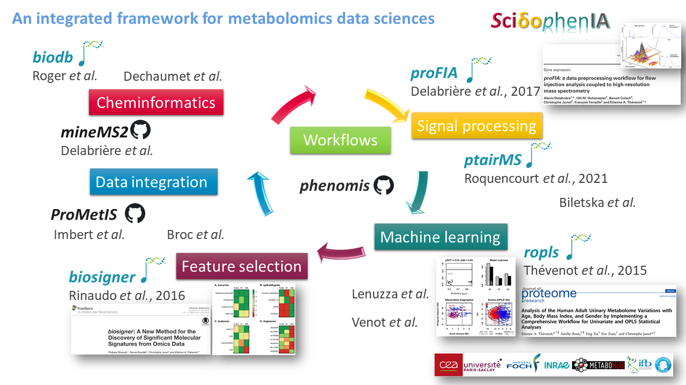

Wellcome to the website from the Metabolomics Data Sciences for Precision Medicine team (SciDoPhenIA):

Contact
Etienne A. Thevenot, PhD
Metabolomics Data Sciences for Precision Medicine team (SciDoPhenIA)
Medicines and Healthcare Technologies Department
CEA, INRAE, Paris Saclay University, MetaboHUB
CEA, Centre de Saclay, F-91191 Gif-sur-Yvette Cedex, France
E-mail: etienne.thevenot *at* cea.fr